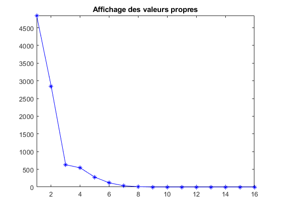
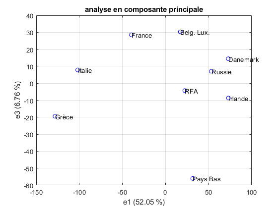
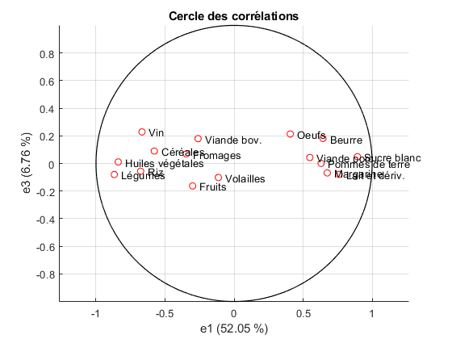

clear all; close all;
Y= [68 76 127 60 72 68 84 68 82;
2 4 3 3 2 3 2 2 4;
81 74 41 81 101 102 111 68 70;
36 34 31 37 35 40 42 44 24;
64 115 172 82 60 76 83 57 237;
89 53 69 84 64 33 30 38 57;
25 93 87 13 66 6 3 14 45;
6 12 20 4 4 8 8 7 22;
7 3 1 12 10 6 4 12 1;
24 33 25 21 28 23 23 13 20;
58 38 24 41 41 26 32 51 18;
84 90 80 136 87 14 14 9 13;
85 91 84 135 89 134 187 159 64;
6 7 2 3 8 5 11 6 1;
12 18 13 13 10 6 3 10 8;
17 15 11 11 14 14 14 14 12];
tab_1={ 'RFA' 3;
'France' 6;
'Italie' 6;
'Pays Bas' 8;
'Belg. Lux.' 10;
'Russie' 6;
'Irlande' 7;
'Danemark' 8;
'Grèce' 5};
tab_2={ 'Céréales' 8;
'Riz' 3;
'Pommes de terre' 14;
'Sucre blanc' 11;
'Légumes' 7;
'Fruits' 6;
'Vin' 3;
'Huiles végétales' 16;
'Margarine' 9;
'Viande bov.' 11;
'Viande porc.' 12;
'Volailles' 9;
'Lait et dériv.' 14;
'Beurre' 6;
'Fromages' 8;
'Oeufs' 5 };
Y = Y';
[n,m]=size(Y);
X=zeros(n,m);
moy=mean(Y);
for i = (1:m)
X(:,i)=Y(:,i)-moy(i);
end
M=1/n*(X'*X);
[V,D]=eig(M);
lambda=flipud(diag(D));
P=fliplr(V);
figure(2)
plot(lambda,'b-*')
axis([-inf,inf,-inf,inf])
title('Affichage des valeurs propres');
tau=zeros(1,m);
for i=1:16
tau(i)=lambda(i)/sum(lambda);
end
Xstar=X*P;
figure(3)
plot(Xstar(:,1),Xstar(:,3),'bo');
text(Xstar(:,1)+0.05,Xstar(:,3),tab_1(:,1));
grid()
xlabel('e1 (52.05 %)')
ylabel('e3 (6.76 %)')
title('analyse en composante principale');
sigma=std(Y);
Z=X*diag(1./sigma);
r1=(1/(n*sqrt(lambda(1))))*Z'*Xstar(:,1);
r2=(1/(n*sqrt(lambda(2))))*Z'*Xstar(:,3);
figure(4);
hold on;
theta=0:0.1:360;
crlx=cos(theta);
crly=sin(theta);
plot(r1,r2,'ro')
axis equal
text(r1+0.05,r2,tab_2(:,1));
plot(crlx,crly,'black');
grid()
xlabel('e1 (52.05 %)')
ylabel('e3 (6.76 %)')
title('Cercle des corrélations');
  